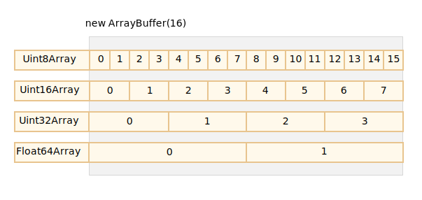
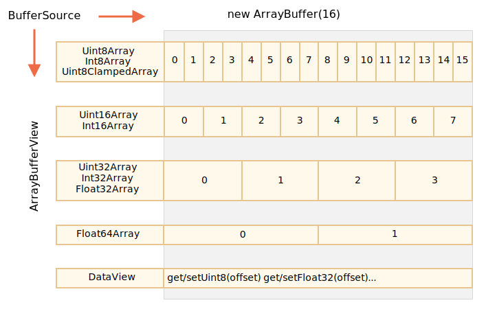

在 Web 开发中，当我们处理文件时（创建，上传，下载），经常会遇到二进制数据。另一个典型的应用场景是图像处理。
这些都可以通过 JavaScript 进行处理，而且二进制操作性能更高。
不过，在 JavaScript 中有很多种二进制数据格式，会有点容易混淆。仅举几个例子：
ArrayBuffer，Uint8Array，DataView，Blob，File 及其他。与其他语言相比，JavaScript 中的二进制数据是以非标准方式实现的。但是，当我们理清楚以后，一切就会变得相当简单了。
基本的二进制对象是 ArrayBuffer —— 对固定长度的连续内存空间的引用。
我们这样创建它：
let buffer = new ArrayBuffer(16); // 创建一个长度为 16 的 buffer
alert(buffer.byteLength); // 16它会分配一个 16 字节的连续内存空间，并用 0 进行预填充。
"ArrayBuffer 不是某种东西的数组"
让我们先澄清一个可能的误区。ArrayBuffer 与 Array 没有任何共同之处：
buffer[index]。ArrayBuffer 是一个内存区域。它里面存储了什么？无从判断。只是一个原始的字节序列。
如要操作 ArrayBuffer，我们需要使用“视图”对象。
视图对象本身并不存储任何东西。它是一副“眼镜”，透过它来解释存储在 ArrayBuffer 中的字节。
例如：
Uint8Array —— 将 ArrayBuffer 中的每个字节视为 0 到 255 之间的单个数字（每个字节是 8 位，因此只能容纳那么多）。这称为 “8 位无符号整数”。Uint16Array —— 将每 2 个字节视为一个 0 到 65535 之间的整数。这称为 “16 位无符号整数”。Uint32Array —— 将每 4 个字节视为一个 0 到 4294967295 之间的整数。这称为 “32 位无符号整数”。Float64Array —— 将每 8 个字节视为一个 5.0x10-324 到 1.8x10308 之间的浮点数。因此，一个 16 字节 ArrayBuffer 中的二进制数据可以解释为 16 个“小数字”，或 8 个更大的数字（每个数字 2 个字节），或 4 个更大的数字（每个数字 4 个字节），或 2 个高精度的浮点数（每个数字 8 个字节）。

ArrayBuffer 是核心对象，是所有的基础，是原始的二进制数据。
但是，如果我们要写入值或遍历它，基本上几乎所有操作 —— 我们必须使用视图（view），例如：
let buffer = new ArrayBuffer(16); // 创建一个长度为 16 的 buffer
let view = new Uint32Array(buffer); // 将 buffer 视为一个 32 位整数的序列
alert(Uint32Array.BYTES_PER_ELEMENT); // 每个整数 4 个字节
alert(view.length); // 4，它存储了 4 个整数
alert(view.byteLength); // 16，字节中的大小
// 让我们写入一个值
view[0] = 123456;
// 遍历值
for(let num of view) {
alert(num); // 123456，然后 0，0，0（一共 4 个值）
}
所有这些视图（Uint8Array，Uint32Array 等）的通用术语是 TypedArray。它们都享有同一组方法和属性。
请注意，没有名为 TypedArray 的构造器，它只是表示 ArrayBuffer 上的视图之一的通用总称术语：Int8Array，Uint8Array 及其他，很快就会有完整列表。
当你看到 new TypedArray 之类的内容时，它表示 new Int8Array、new Uint8Array 及其他中之一。
类型化数组的行为类似于常规数组：具有索引，并且是可迭代的。
一个类型化数组的构造器（无论是 Int8Array 或 Float64Array，都无关紧要），其行为各不相同，并且取决于参数类型。
参数有 5 种变体：
new TypedArray(buffer, [byteOffset], [length]);
new TypedArray(object);
new TypedArray(typedArray);
new TypedArray(length);
new TypedArray();如果给定的是 ArrayBuffer 参数，则会在其上创建视图。我们已经用过该语法了。
可选，我们可以给定起始位置 byteOffset（默认为 0）以及 length（默认至 buffer 的末尾），这样视图将仅涵盖 buffer 的一部分。
如果给定的是 Array，或任何类数组对象，则会创建一个相同长度的类型化数组，并复制其内容。
我们可以使用它来预填充数组的数据：
let arr = new Uint8Array([0, 1, 2, 3]);
alert( arr.length ); // 4，创建了相同长度的二进制数组
alert( arr[1] ); // 1，用给定值填充了 4 个字节（无符号 8 位整数）如果给定的是另一个 TypedArray，也是如此：创建一个相同长度的类型化数组，并复制其内容。如果需要的话，数据在此过程中会被转换为新的类型。
let arr16 = new Uint16Array([1, 1000]);
let arr8 = new Uint8Array(arr16);
alert( arr8[0] ); // 1
alert( arr8[1] ); // 232，试图复制 1000，但无法将 1000 放进 8 位字节中（详述见下文）。对于数字参数 length —— 创建类型化数组以包含这么多元素。它的字节长度将是 length 乘以单个 TypedArray.BYTES_PER_ELEMENT 中的字节数：
let arr = new Uint16Array(4); // 为 4 个整数创建类型化数组
alert( Uint16Array.BYTES_PER_ELEMENT ); // 每个整数 2 个字节
alert( arr.byteLength ); // 8（字节中的大小）不带参数的情况下，创建长度为零的类型化数组。
我们可以直接创建一个 TypedArray，而无需提及 ArrayBuffer。但是，视图离不开底层的 ArrayBuffer，因此，除第一种情况（已提供 ArrayBuffer）外，其他所有情况都会自动创建 ArrayBuffer。
如要访问 ArrayBuffer，可以用以下属性：
arr.buffer —— 引用 ArrayBuffer。arr.byteLength —— ArrayBuffer 的长度。因此，我们总是可以从一个视图转到另一个视图：
let arr8 = new Uint8Array([0, 1, 2, 3]);
// 同一数据的另一个视图
let arr16 = new Uint16Array(arr8.buffer);下面是类型化数组的列表：
Uint8Array，Uint16Array，Uint32Array —— 用于 8、16 和 32 位的整数。Uint8ClampedArray —— 用于 8 位整数，在赋值时便“固定“其值（见下文）。Int8Array，Int16Array，Int32Array —— 用于有符号整数（可以为负数）。Float32Array，Float64Array —— 用于 32 位和 64 位的有符号浮点数。"没有 int8 或类似的单值类型"
请注意，尽管有类似 Int8Array 这样的名称，但 JavaScript 中并没有像 int，或 int8 这样的单值类型。
这是合乎逻辑的，因为 Int8Array 不是这些单值的数组，而是 ArrayBuffer 上的视图。
### 越界行为
如果我们尝试将越界值写入类型化数组会出现什么情况？不会报错。但是多余的位被切除。
例如，我们尝试将 256 放入 `Uint8Array`。256 的二进制格式是 `100000000`（9 位），但 `Uint8Array` 每个值只有 8 位，因此可用范围为 0 到 255。
对于更大的数字，仅存储最右边的（低位有效）8 位，其余部分被切除：

因此结果是 0。
257 的二进制格式是 `100000001`（9 位），最右边的 8 位会被存储，因此数组中会有 `1`：

换句话说，该数字对 2<sup>8</sup> 取模的结果被保存了下来。
示例如下：
```js
let uint8array = new Uint8Array(16);
let num = 256;
alert(num.toString(2)); // 100000000（二进制表示）
uint8array[0] = 256;
uint8array[1] = 257;
alert(uint8array[0]); // 0
alert(uint8array[1]); // 1Uint8ClampedArray 在这方面比较特殊，它的表现不太一样。对于大于 255 的任何数字，它将保存为 255，对于任何负数，它将保存为 0。此行为对于图像处理很有用。
TypedArray 具有常规的 Array 方法，但有个明显的例外。
我们可以遍历（iterate），map，slice，find 和 reduce 等。
但有几件事我们做不了：
splice —— 我们无法“删除”一个值，因为类型化数组是缓冲区（buffer）上的视图，并且缓冲区（buffer）是固定的、连续的内存区域。我们所能做的就是分配一个零值。concat 方法。还有两种其他方法：
arr.set(fromArr, [offset]) 将 fromArr 中从 offset（默认为 0）开始的所有元素复制到 arr。arr.subarray([begin, end]) 创建一个从 begin 到 end（不包括）相同类型的新视图。这类似于 slice 方法（同样也支持），但不复制任何内容 —— 只是创建一个新视图，以对给定片段的数据进行操作。有了这些方法，我们可以复制、混合类型化数组，从现有数组创建新数组，等。
DataView 是在 ArrayBuffer 上的一种特殊的超灵活“未类型化”视图。它允许以任何格式访问任何偏移量（offset）的数据。
arr[i]。DataView，我们可以使用 .getUint8(i) 或 .getUint16(i) 之类的方法访问数据。我们在调用方法时选择格式，而不是在构造的时候。语法：
new DataView(buffer, [byteOffset], [byteLength])buffer —— 底层的 ArrayBuffer。与类型化数组不同，DataView 不会自行创建缓冲区（buffer）。我们需要事先准备好。byteOffset —— 视图的起始字节位置（默认为 0）。byteLength —— 视图的字节长度（默认至 buffer 的末尾）。例如，这里我们从同一个 buffer 中提取不同格式的数字：
// 4 个字节的二进制数组，每个都是最大值 255
let buffer = new Uint8Array([255, 255, 255, 255]).buffer;
let dataView = new DataView(buffer);
// 在偏移量为 0 处获取 8 位数字
alert( dataView.getUint8(0) ); // 255
// 现在在偏移量为 0 处获取 16 位数字，它由 2 个字节组成，一起解析为 65535
alert( dataView.getUint16(0) ); // 65535（最大的 16 位无符号整数）
// 在偏移量为 0 处获取 32 位数字
alert( dataView.getUint32(0) ); // 4294967295（最大的 32 位无符号整数）
dataView.setUint32(0, 0); // 将 4 个字节的数字设为 0，即将所有字节都设为 0当我们将混合格式的数据存储在同一缓冲区（buffer）中时，DataView 非常有用。例如，我们存储一个成对序列（16 位整数，32 位浮点数）。用 DataView 可以轻松访问它们。
ArrayBuffer 是核心对象，是对固定长度的连续内存区域的引用。
几乎任何对 ArrayBuffer 的操作，都需要一个视图。
TypedArray：Uint8Array，Uint16Array，Uint32Array —— 用于 8 位、16 位和 32 位无符号整数。Uint8ClampedArray —— 用于 8 位整数，在赋值时便“固定”其值。Int8Array，Int16Array，Int32Array —— 用于有符号整数（可以为负数）。Float32Array，Float64Array —— 用于 32 位和 64 位的有符号浮点数。DataView —— 使用方法来指定格式的视图，例如，getUint8(offset)。在大多数情况下，我们直接对类型化数组进行创建和操作，而将 ArrayBuffer 作为“通用标识符（common discriminator）”隐藏起来。我们可以通过 .buffer 来访问它，并在需要时创建另一个视图。
还有另外两个术语，用于对二进制数据进行操作的方法的描述：
ArrayBufferView 是所有这些视图的总称。BufferSource 是 ArrayBuffer 或 ArrayBufferView 的总称。我们将在下一章中学习这些术语。BufferSource 是最常用的术语之一，因为它的意思是“任何类型的二进制数据” —— ArrayBuffer 或其上的视图。
这是一份备忘单：
